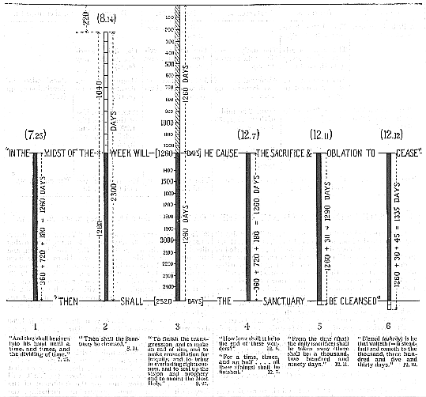

|
OF DANIEL 7:25; 8:14; 12:7, 11, 12.
The terminus a quo of 1, 4, 5, 6 (see diagram) is manifestly determined by the term "in the midst of the week" (the last "seven" of years), of the standard (col. 3) : that is, 1,260 days, or 3 1/2 years from either end of the column. "The prince that shall come" (Antichrist) "will make a (*2) covenant with many for one week" (i.e. seven years) (9:27). After 3 1/2 years, on grounds not stated, he breaks this covenant (or "league", 11:23), the daily sacrifice is "taken away", the "abomination" set up, and "Jacob's trouble" (Jer. 30:7) commences and continues for the remainder of the "seven" : viz. : for the 1,260 days or 3 1/2 years. It is this "midst of the week" that determines both the a quo and the ad quem of these Numbered Days. In 8:14 it is stated, "then shall the Sanctuary be cleansed" (*3). With regard to this "cleansing", all the periods, 1, 2, 3, 4, 5, 6 (see diagram) synchronize at the end (see Ap. 89); while the last tow columns (5 and 6) are extended and prolonged beyond the close of the 1,260 days by two significant periods of days, viz. 30 days and 75 days, respectively. The first of these, 1,290 days is 1,260 + 30. And the 30 days here may be taken as a "Ve-Adar" or intercalary month of 30 days of "cleansing" following directly after the destruction of the false Messiah, and the break up of his confederacy. These thirty days may possibly be the period allotted for the construction of the new and glorious "Sanctuary" of Ezekiel 40-43, which is to be erected after the destruction and removal of the Jewish temple which will have been built by the sons of Israel some time previously to its profanation by the Antichrist -- as the antitype of Antiochus Epiphanes. With regard to the 1,335 days of 12:12 : This is 1,260 days with an excess of 75 days. This again being an excess of 45 days beyond the 1,290 of 12:11. 1,335 is, therefore, 1,260 + 30 + 45. If the 30 days are occupied with the "cleansing", i.e. with the "justifying" or "making righteous" a new and glorious "Sanctuary", then it may be that the further 45 days, over and above the 1,290, will cover the preparation time for the fulfillment of the forty-fifth psalm (such preparation including, the resurrection to life of those concerned in 12:2), in order that the nuptials of the king may be celebrated as described in such wonderful and minute detail in that psalm. (*4) In connection with this period (1,335 days) we have the only Beatitude in the book! "Blessed (ashrey) is he that waiteth ( = is steadfast) and cometh to the thousand three hundred and five and thirty days" (12:12). A blessed "lot" indeed for those who will have passed through "the Trouble" and are counted worthy to be participators in the scenes of glory and triumph of the King when He is united to restored Israel in that Day, as portrayed in the forty-fifth psalm! In examining the diagram and the references in the book, it w fa4 ill be seen (1) that the only one of these five periods of "time" and "days" that presents any serious difficulty is that of the 2,300 days. (2) That its terminus ad quem is the same as the others, viz. the end of the seventieth seven is clear from 8:14, which gives it as being marked by the "cleansing of the Sanctuary". Reckoning backwards, therefore, the terminus a quo of this period is seen to be 220 days short of the commencement of the seventieth "seven". It is not clearly revealed what event or events will mark the commencement of these 2,300 days, but it will be probably some political crisis connected with the confederated kingdoms under the sway of the Antichrist. The key is possibly to be found in chapter 8, typified by the contention between the ram and he-goat representing Medo-Persia and Greece. But, though the terminus a quo of this period is not given to us in plain language (like e.g. the "midst of the week" of 9:27), yet it will be known to, and understood by, the people of God, who pass through "the Trouble" time of the seventieth "seven", for "the wise (in that day) shall understand" (12:10). If the "time of trouble" of Dan. 12:1 is a "time" like the "time" of
7:25; 12:7 (Nos. 1 and 4, above), i.e. one year, then there are six specific periods of time in the book of Daniel, in addition to the seventieth,
or last "seven". If so, the "time" of Dan. 12:1 suggests that "Jacob's
trouble" will be closed by a "time" (or year) of acutest "tribulation".
Does this correspond with "the acceptable year" of Isa. 61:2, immediately
preceding the "Vengeance"? 
notes: (*1) See the last paragraph on p. 130. (*2) No definite art. in the Heb. (*3) Heb. zadak = justified or made righteous. Not the word used of ceremonial or moral cleansing (Heb. tah-heer); and it may be noted that the word is here employed in the Niphal-Praeterite form -- and is therefore equal to -- the Sanctuary was justified or made, or appointed righteous. (*4) Further, it is interesting to note in connection with the numbers 30 and 45, that Ps. 30 was sung "at the dedication of the house of David" -- its subject being praise for deliverance in "The Day of (the) Trouble" (Ps. 20:1) -- which is prophetically this very 1,260 days of "Jacob's trouble" in Daniel and Revelation. And 45 is the number of the Psalm which, as the Great King's Nuptial Ode -- sets before us the glory and triumph of the Messiah at His marriage with the elect remnant of Israel -- the "wife" of such passages as Isa. 54:5-8; 62:4, 5. Jer. 3:14, &c. Moreover, the No. 75 is that of the Psalm which sets before us "God's anointed" in the Sanctuary, and emphatically declared (v. 7) "God is Judge" (or Ruler).
|